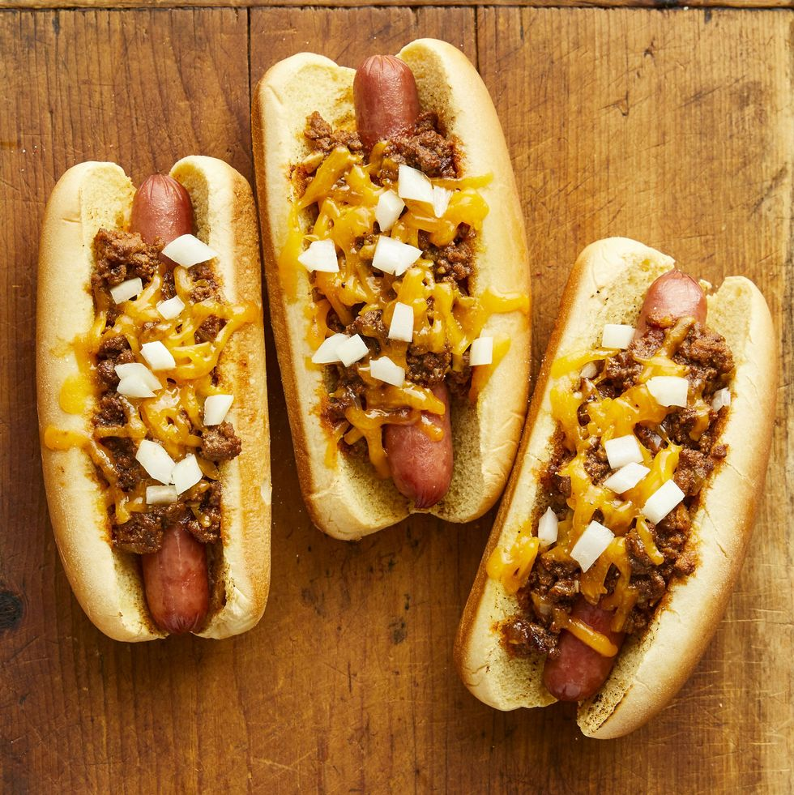

Chilli Cheese Dog

Ingredents
Chili Ingredents
- 1 TBSP Olive Oil
- 1 Lb Ground Beef
- 1 Yellow Onion, Chopped
- 1 TBSP Chili Powder
- 1 TSP Ground Cumin
- 2 Garlic Cloves, Chopped
- 1 Can Chipotle Chiles
- 1/2 TSP Salt
- 1/2 Cup Dark Lager
- 8oz Can Tomato Sauce
- 1 TBSP Dark Brown Sugar
Hot Dogs Ingredents
- 8 Hot Dogs
- 8 Potato Hot Dog Buns
- 2 Cup Grated Cheese
- Chopped White Onion, for Topping
Instructions
- For the chili: Heat the olive oil in a large skillet over medium heat. Add the beef and cook, breaking it up with a wooden spoon, until browned, 4 to 5 minutes. Add the yellow onion and cook, stirring, until it begins to soften, 3 to 4 minutes. Add the chili powder, cumin, garlic, chipotle, adobo sauce and salt and stir to combine and coat the meat.
- Add the beer and simmer until reduced by about half, 1 to 2 minutes. Stir in the tomato sauce, beef broth and brown sugar and simmer until the chili has thickened but is still slightly saucy, 8 to 10 minutes. Season with salt to taste. Keep the chili warm while you cook the hot dogs.
- For the hot dogs: Preheat the broiler. Brush a large cast-iron skillet with olive oil and heat over medium-high heat. Add the hot dogs and cook, turning occasionally, until browned and heated through, 4 to 5 minutes.
- Put the hot dog buns on a baking sheet and broil until toasted, about 1 minute. Place the hot dogs in the buns and top with the chili and cheese. Broil until the cheese melts, about 1 minute. Top with chopped white onion.